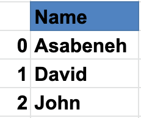
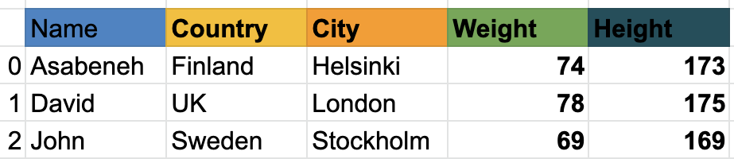

- 📘 Day 25
- Pandas
- DataFrames
- Reading CSV File Using Pandas
- Modifying a DataFrame
- Checking data types of Column values
- Exercises: Day 25
📘 Day 25⚓︎
Pandas⚓︎
Pandas is an open source, high-performance, easy-to-use data structures and data analysis tools for the Python programming language. Pandas adds data structures and tools designed to work with table-like data which is Series and Data Frames. Pandas provides tools for data manipulation:
- reshaping
- merging
- sorting
- slicing
- aggregation
- imputation. If you are using anaconda, you do not have install pandas.
Installing Pandas⚓︎
For Mac:
pip install conda
conda install pandas
For Windows:
pip install conda
pip install pandas
Pandas data structure is based on Series and DataFrames.
A series is a column and a DataFrame is a multidimensional table made up of collection of series. In order to create a pandas series we should use numpy to create a one dimensional arrays or a python list. Let us see an example of a series:
Names Pandas Series

Countries Series

Cities Series

As you can see, pandas series is just one column of data. If we want to have multiple columns we use data frames. The example below shows pandas DataFrames.
Let us see, an example of a pandas data frame:

Data frame is a collection of rows and columns. Look at the table below; it has many more columns than the example above:

Next, we will see how to import pandas and how to create Series and DataFrames using pandas
Importing Pandas⚓︎
import pandas as pd # importing pandas as pd
import numpy as np # importing numpy as np
Creating Pandas Series with Default Index⚓︎
nums = [1, 2, 3, 4,5]
s = pd.Series(nums)
print(s)
0 1
1 2
2 3
3 4
4 5
dtype: int64
Creating Pandas Series with custom index⚓︎
nums = [1, 2, 3, 4, 5]
s = pd.Series(nums, index=[1, 2, 3, 4, 5])
print(s)
1 1
2 2
3 3
4 4
5 5
dtype: int64
fruits = ['Orange','Banana','Mango']
fruits = pd.Series(fruits, index=[1, 2, 3])
print(fruits)
1 Orange
2 Banana
3 Mango
dtype: object
Creating Pandas Series from a Dictionary⚓︎
dct = {'name':'Asabeneh','country':'Finland','city':'Helsinki'}
s = pd.Series(dct)
print(s)
name Asabeneh
country Finland
city Helsinki
dtype: object
Creating a Constant Pandas Series⚓︎
s = pd.Series(10, index = [1, 2, 3])
print(s)
1 10
2 10
3 10
dtype: int64
Creating a Pandas Series Using Linspace⚓︎
s = pd.Series(np.linspace(5, 20, 10)) # linspace(starting, end, items)
print(s)
0 5.000000
1 6.666667
2 8.333333
3 10.000000
4 11.666667
5 13.333333
6 15.000000
7 16.666667
8 18.333333
9 20.000000
dtype: float64
DataFrames⚓︎
Pandas data frames can be created in different ways.
Creating DataFrames from List of Lists⚓︎
data = [
['Asabeneh', 'Finland', 'Helsink'],
['David', 'UK', 'London'],
['John', 'Sweden', 'Stockholm']
]
df = pd.DataFrame(data, columns=['Names','Country','City'])
print(df)
| Names | Country | City | |
|---|---|---|---|
| 0 | Asabeneh | Finland | Helsink |
| 1 | David | UK | London |
| 2 | John | Sweden | Stockholm |
Creating DataFrame Using Dictionary⚓︎
data = {'Name': ['Asabeneh', 'David', 'John'], 'Country':[
'Finland', 'UK', 'Sweden'], 'City': ['Helsiki', 'London', 'Stockholm']}
df = pd.DataFrame(data)
print(df)
| Name | Country | City | |
|---|---|---|---|
| 0 | Asabeneh | Finland | Helsiki |
| 1 | David | UK | London |
| 2 | John | Sweden | Stockholm |
Creating DataFrames from a List of Dictionaries⚓︎
data = [
{'Name': 'Asabeneh', 'Country': 'Finland', 'City': 'Helsinki'},
{'Name': 'David', 'Country': 'UK', 'City': 'London'},
{'Name': 'John', 'Country': 'Sweden', 'City': 'Stockholm'}]
df = pd.DataFrame(data)
print(df)
| Name | Country | City | |
|---|---|---|---|
| 0 | Asabeneh | Finland | Helsinki |
| 1 | David | UK | London |
| 2 | John | Sweden | Stockholm |
Reading CSV File Using Pandas⚓︎
To download the CSV file, what is needed in this example, console/command line is enough:
curl -O https://raw.githubusercontent.com/Asabeneh/30-Days-Of-Python/master/data/weight-height.csv
Put the downloaded file in your working directory.
import pandas as pd
df = pd.read_csv('weight-height.csv')
print(df)
Data Exploration⚓︎
Let us read only the first 5 rows using head()
print(df.head()) # give five rows we can increase the number of rows by passing argument to the head() method
| Gender | Height | Weight | |
|---|---|---|---|
| 0 | Male | 73.847017 | 241.893563 |
| 1 | Male | 68.781904 | 162.310473 |
| 2 | Male | 74.110105 | 212.740856 |
| 3 | Male | 71.730978 | 220.042470 |
| 4 | Male | 69.881796 | 206.349801 |
Let us also explore the last recordings of the dataframe using the tail() methods.
print(df.tail()) # tails give the last five rows, we can increase the rows by passing argument to tail method
| Gender | Height | Weight | |
|---|---|---|---|
| 9995 | Female | 66.172652 | 136.777454 |
| 9996 | Female | 67.067155 | 170.867906 |
| 9997 | Female | 63.867992 | 128.475319 |
| 9998 | Female | 69.034243 | 163.852461 |
| 9999 | Female | 61.944246 | 113.649103 |
As you can see the csv file has three rows: Gender, Height and Weight. If the DataFrame would have a long rows, it would be hard to know all the columns. Therefore, we should use a method to know the colums. we do not know the number of rows. Let's use shape meathod.
print(df.shape) # as you can see 10000 rows and three columns
(10000, 3)
Let us get all the columns using columns.
print(df.columns)
Index(['Gender', 'Height', 'Weight'], dtype='object')
Now, let us get a specific column using the column key
heights = df['Height'] # this is now a series
print(heights)
0 73.847017
1 68.781904
2 74.110105
3 71.730978
4 69.881796
...
9995 66.172652
9996 67.067155
9997 63.867992
9998 69.034243
9999 61.944246
Name: Height, Length: 10000, dtype: float64
weights = df['Weight'] # this is now a series
print(weights)
0 241.893563
1 162.310473
2 212.740856
3 220.042470
4 206.349801
...
9995 136.777454
9996 170.867906
9997 128.475319
9998 163.852461
9999 113.649103
Name: Weight, Length: 10000, dtype: float64
print(len(heights) == len(weights))
True
The describe() method provides a descriptive statistical values of a dataset.
print(heights.describe()) # give statisical information about height data
count 10000.000000
mean 66.367560
std 3.847528
min 54.263133
25% 63.505620
50% 66.318070
75% 69.174262
max 78.998742
Name: Height, dtype: float64
print(weights.describe())
count 10000.000000
mean 161.440357
std 32.108439
min 64.700127
25% 135.818051
50% 161.212928
75% 187.169525
max 269.989699
Name: Weight, dtype: float64
print(df.describe()) # describe can also give statistical information from a dataFrame
| Height | Weight | |
|---|---|---|
| count | 10000.000000 | 10000.000000 |
| mean | 66.367560 | 161.440357 |
| std | 3.847528 | 32.108439 |
| min | 54.263133 | 64.700127 |
| 25% | 63.505620 | 135.818051 |
| 50% | 66.318070 | 161.212928 |
| 75% | 69.174262 | 187.169525 |
| max | 78.998742 | 269.989699 |
Similar to describe(), the info() method also give information about the dataset.
Modifying a DataFrame⚓︎
Modifying a DataFrame: * We can create a new DataFrame * We can create a new column and add it to the DataFrame, * we can remove an existing column from a DataFrame, * we can modify an existing column in a DataFrame, * we can change the data type of column values in the DataFrame
Creating a DataFrame⚓︎
As always, first we import the necessary packages. Now, lets import pandas and numpy, two best friends ever.
import pandas as pd
import numpy as np
data = [
{"Name": "Asabeneh", "Country":"Finland","City":"Helsinki"},
{"Name": "David", "Country":"UK","City":"London"},
{"Name": "John", "Country":"Sweden","City":"Stockholm"}]
df = pd.DataFrame(data)
print(df)
| Name | Country | City | |
|---|---|---|---|
| 0 | Asabeneh | Finland | Helsinki |
| 1 | David | UK | London |
| 2 | John | Sweden | Stockholm |
Adding a column to a DataFrame is like adding a key to a dictionary.
First let's use the previous example to create a DataFrame. After we create the DataFrame, we will start modifying the columns and column values.
Adding a New Column⚓︎
Let's add a weight column in the DataFrame
weights = [74, 78, 69]
df['Weight'] = weights
df
| Name | Country | City | Weight | |
|---|---|---|---|---|
| 0 | Asabeneh | Finland | Helsinki | 74 |
| 1 | David | UK | London | 78 |
| 2 | John | Sweden | Stockholm | 69 |
Let's add a height column into the DataFrame aswell
heights = [173, 175, 169]
df['Height'] = heights
print(df)
| Name | Country | City | Weight | Height | |
|---|---|---|---|---|---|
| 0 | Asabeneh | Finland | Helsinki | 74 | 173 |
| 1 | David | UK | London | 78 | 175 |
| 2 | John | Sweden | Stockholm | 69 | 169 |
As you can see in the DataFrame above, we did add new columns, Weight and Height. Let's add one additional column called BMI(Body Mass Index) by calculating their BMI using thier mass and height. BMI is mass divided by height squared (in meters) - Weight/Height * Height.
As you can see, the height is in centimeters, so we shoud change it to meters. Let's modify the height row.
Modifying column values⚓︎
df['Height'] = df['Height'] * 0.01
df
| Name | Country | City | Weight | Height | |
|---|---|---|---|---|---|
| 0 | Asabeneh | Finland | Helsinki | 74 | 1.73 |
| 1 | David | UK | London | 78 | 1.75 |
| 2 | John | Sweden | Stockholm | 69 | 1.69 |
# Using functions makes our code clean, but you can calculate the bmi without one
def calculate_bmi ():
weights = df['Weight']
heights = df['Height']
bmi = []
for w,h in zip(weights, heights):
b = w/(h*h)
bmi.append(b)
return bmi
bmi = calculate_bmi()
df['BMI'] = bmi
df
| Name | Country | City | Weight | Height | BMI | |
|---|---|---|---|---|---|---|
| 0 | Asabeneh | Finland | Helsinki | 74 | 1.73 | 24.725183 |
| 1 | David | UK | London | 78 | 1.75 | 25.469388 |
| 2 | John | Sweden | Stockholm | 69 | 1.69 | 24.158818 |
Formating DataFrame columns⚓︎
The BMI column values of the DataFrame are float with many significant digits after decimal. Let's change it to one significant digit after point.
df['BMI'] = round(df['BMI'], 1)
print(df)
| Name | Country | City | Weight | Height | BMI | |
|---|---|---|---|---|---|---|
| 0 | Asabeneh | Finland | Helsinki | 74 | 1.73 | 24.7 |
| 1 | David | UK | London | 78 | 1.75 | 25.5 |
| 2 | John | Sweden | Stockholm | 69 | 1.69 | 24.2 |
The information in the DataFrame seems not yet complete, let's add birth year and current year columns.
birth_year = ['1769', '1985', '1990']
current_year = pd.Series(2020, index=[0, 1,2])
df['Birth Year'] = birth_year
df['Current Year'] = current_year
df
| Name | Country | City | Weight | Height | BMI | Birth Year | Current Year | |
|---|---|---|---|---|---|---|---|---|
| 0 | Asabeneh | Finland | Helsinki | 74 | 1.73 | 24.7 | 1769 | 2020 |
| 1 | David | UK | London | 78 | 1.75 | 25.5 | 1985 | 2020 |
| 2 | John | Sweden | Stockholm | 69 | 1.69 | 24.2 | 1990 | 2020 |
Checking data types of Column values⚓︎
print(df.Weight.dtype)
dtype('int64')
df['Birth Year'].dtype # it gives string object , we should change this to number
df['Birth Year'] = df['Birth Year'].astype('int')
print(df['Birth Year'].dtype) # let's check the data type now
dtype('int32')
Now same for the current year:
df['Current Year'] = df['Current Year'].astype('int')
df['Current Year'].dtype
dtype('int32')
Now, the column values of birth year and current year are integers. We can calculate the age.
ages = df['Current Year'] - df['Birth Year']
ages
0 251
1 35
2 30
dtype: int32
df['Ages'] = ages
print(df)
| Name | Country | City | Weight | Height | BMI | Birth Year | Current Year | Ages | |
|---|---|---|---|---|---|---|---|---|---|
| 0 | Asabeneh | Finland | Helsinki | 74 | 1.73 | 24.7 | 1769 | 2019 | 250 |
| 1 | David | UK | London | 78 | 1.75 | 25.5 | 1985 | 2019 | 34 |
| 2 | John | Sweden | Stockholm | 69 | 1.69 | 24.2 | 1990 | 2019 | 29 |
The person in the first row lived so far for 251 years. It is unlikely for someone to live so long. Either it is a typo or the data is cooked. So lets fill that data with average of the columns without including outlier.
mean = (35 + 30)/ 2
mean = (35 + 30)/ 2
print('Mean: ',mean) #it is good to add some description to the output, so we know what is what
Mean: 32.5
Boolean Indexing⚓︎
print(df[df['Ages'] > 120])
| Name | Country | City | Weight | Height | BMI | Birth Year | Current Year | Ages | |
|---|---|---|---|---|---|---|---|---|---|
| 0 | Asabeneh | Finland | Helsinki | 74 | 1.73 | 24.7 | 1769 | 2020 | 251 |
print(df[df['Ages'] < 120])
| Name | Country | City | Weight | Height | BMI | Birth Year | Current Year | Ages | |
|---|---|---|---|---|---|---|---|---|---|
| 1 | David | UK | London | 78 | 1.75 | 25.5 | 1985 | 2020 | 35 |
| 2 | John | Sweden | Stockholm | 69 | 1.69 | 24.2 | 1990 | 2020 | 30 |
Exercises: Day 25⚓︎
- Read the hacker_news.csv file from data directory
- Get the first five rows
- Get the last five rows
- Get the title column as pandas series
- Count the number of rows and columns
- Filter the titles which contain python
- Filter the titles which contain JavaScript
- Explore the data and make sense of it
🉠CONGRATULATIONS ! ğŸ‰